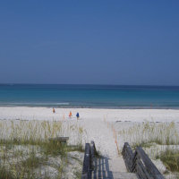
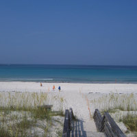

This page consists of one outer slideshow with three slides. Each of the slides contains a slideshow with 3 images. As each inner slideshow completes, the outer slideshow advances to the next slide, and that slide's slideshow begins. Each transition happens on a 3 second timeout.
 



<<Prev
Next>>